Describes three concrete patterns for making agent output trustworthy in go-to-market workflows: an anchor-asset scaffold to ground content generation, a retrieval layer (Radiant Librarian) that supplies business-specific definitions bef...
This traces the talk's own argument from the trust problem to its fixes, not a system the speaker drew as one diagram; the ordering of the three middle patterns is our sequencing, not a stated pipeline (ours).
“doesn't say, "I'm not sure." It says, "Here you go." And it gives you a wrong answer that looks exactly like being right.”
said at 07:50“the main thesis of the talk today is actually, when in doubt, manage your agents like other humans. If you were helping a team of humans figure out how to do something, great.”
said at 08:22“commander's intent when you prompt. This is something that comes out of the armed forces doctrine, but basically tell your agents why you want them to do something, and they will do it a lot better.”
said at 08:52“beware because the agents have been trained on material from other humans, and so they like to micromanage themselves, and that's not usually what you want.”
said at 08:52“the step here was define the structure first, and then turn Claude loose. Don't try and YOLO it”
said at 11:30“it basically gives your agent a just-in-time memory of all the important things. So we know that the fiscal year here is actually February through April.”
said at 12:32“I'm not treating these as fact. I'm treating them as input, and I'm going to weigh the reasoning quality of each of these analysts, and then I'm going to help you come up with the final version here.”
said at 14:37“any AI product where it's been crowbarred into a pre- subscription model is probably not something that you should be using for anything important”
said at 15:39“find something that is at least tier two here and tier two means it's got to be a powerful model. You need it to have attributes like sub agents, plan mode, full MCP support.”
said at 16:10The through-line across all three examples is that trust is manufactured by adding a retrieval or review layer between the raw prompt and the final answer, not by improving the base model's confidence; that's a cheaper and more portable fix than waiting for better models, which may be why a small GTM-tooling vendor can ship it before large platforms do (ours).
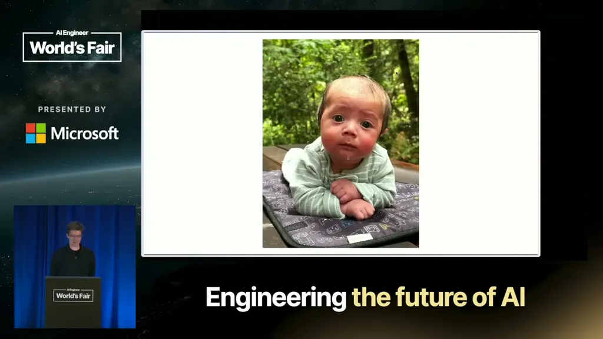
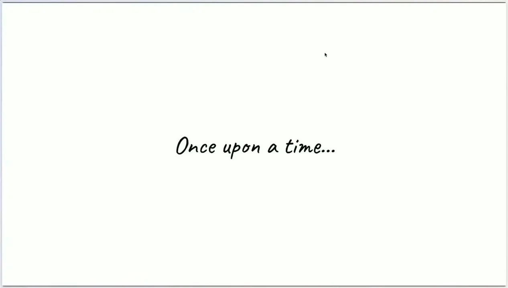
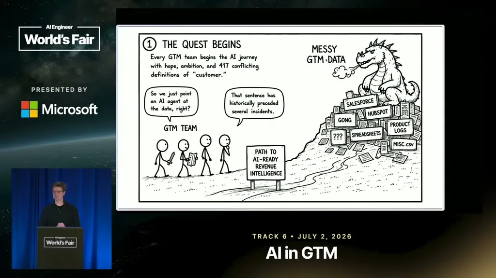
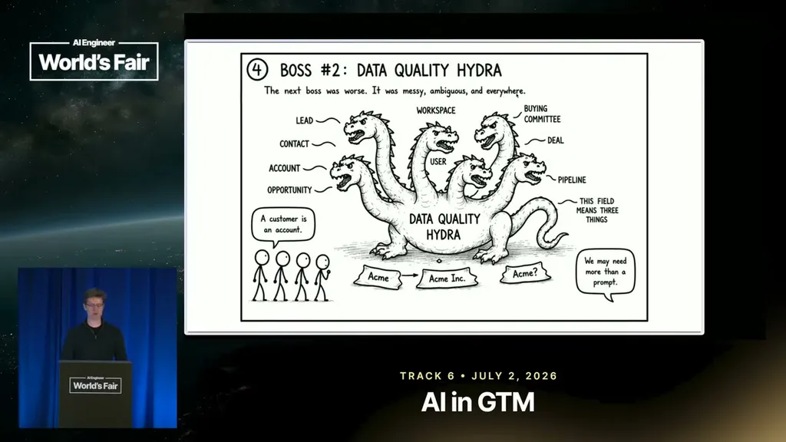
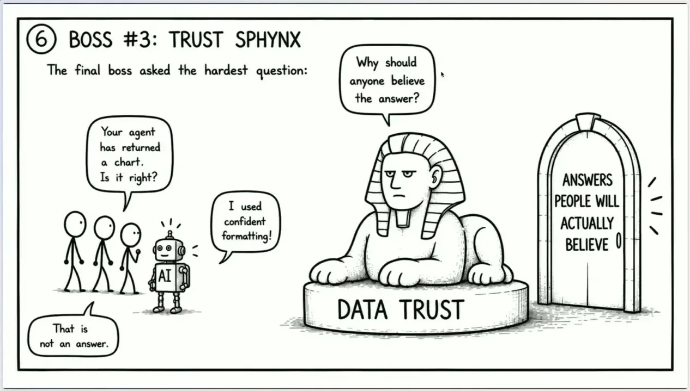
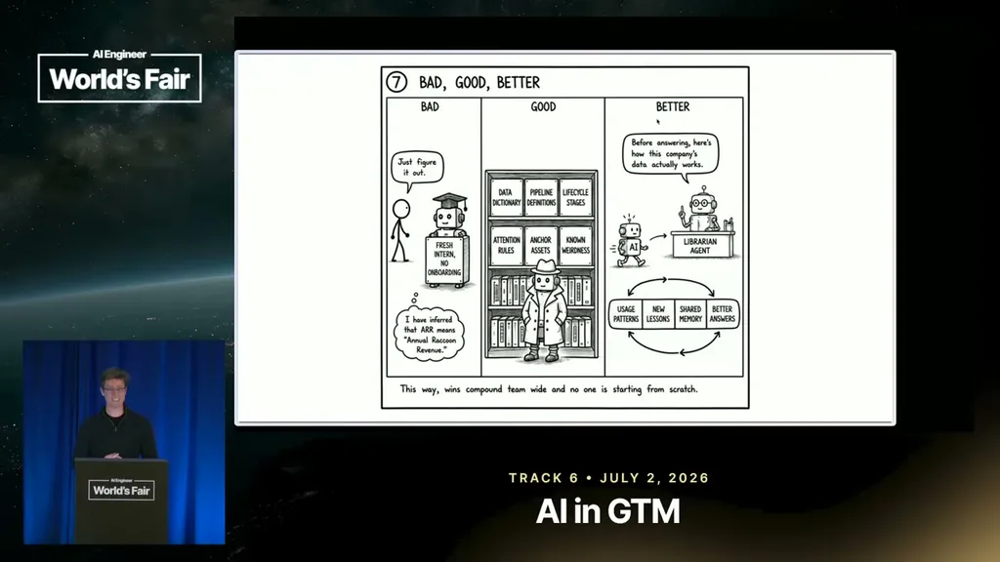
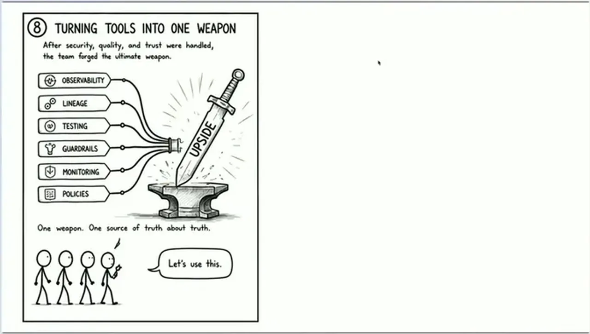
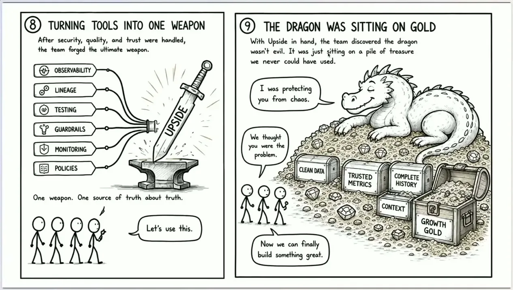
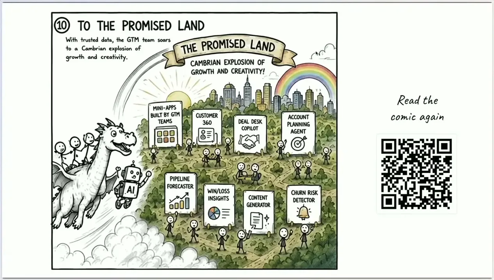
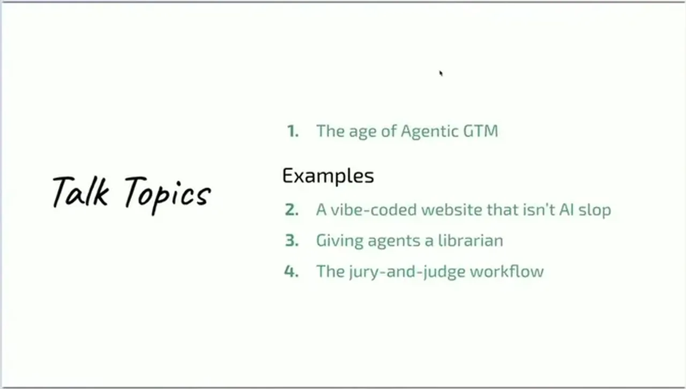
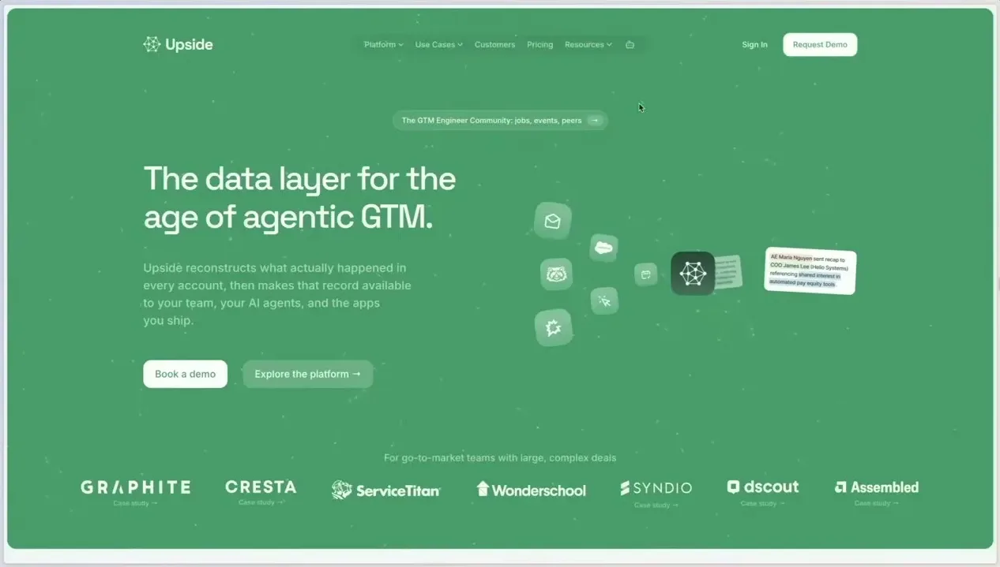
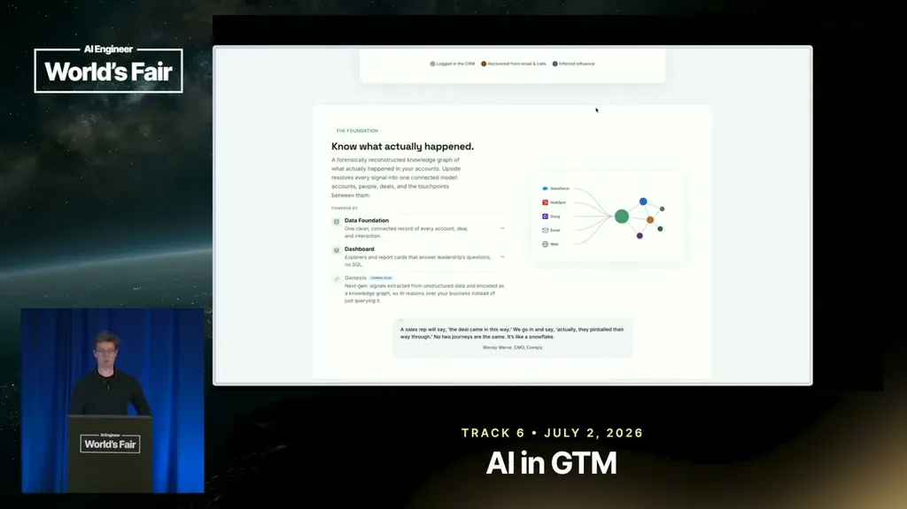
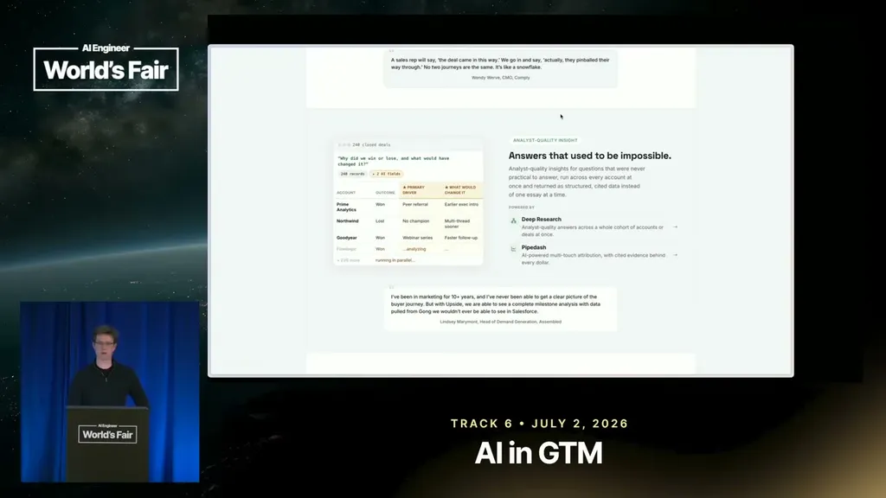
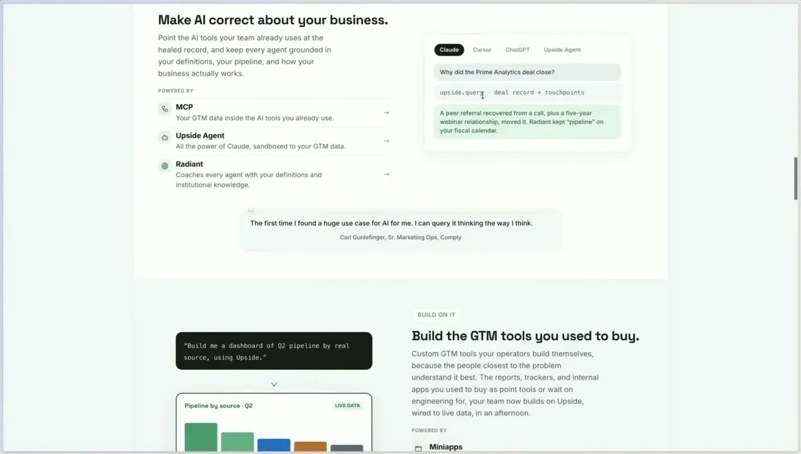
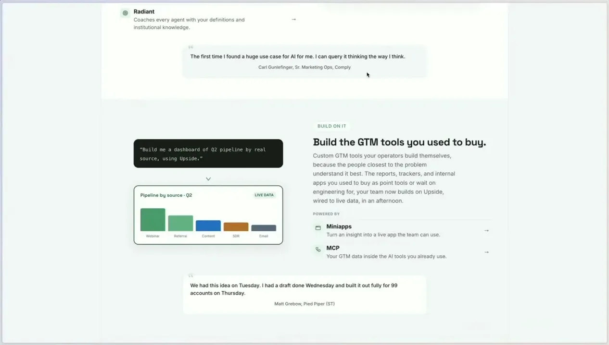
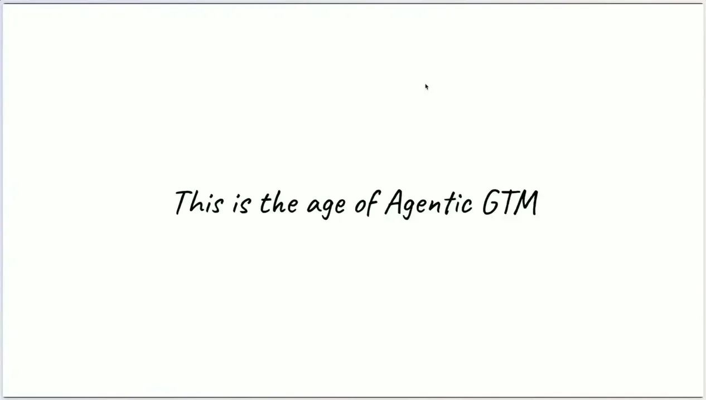
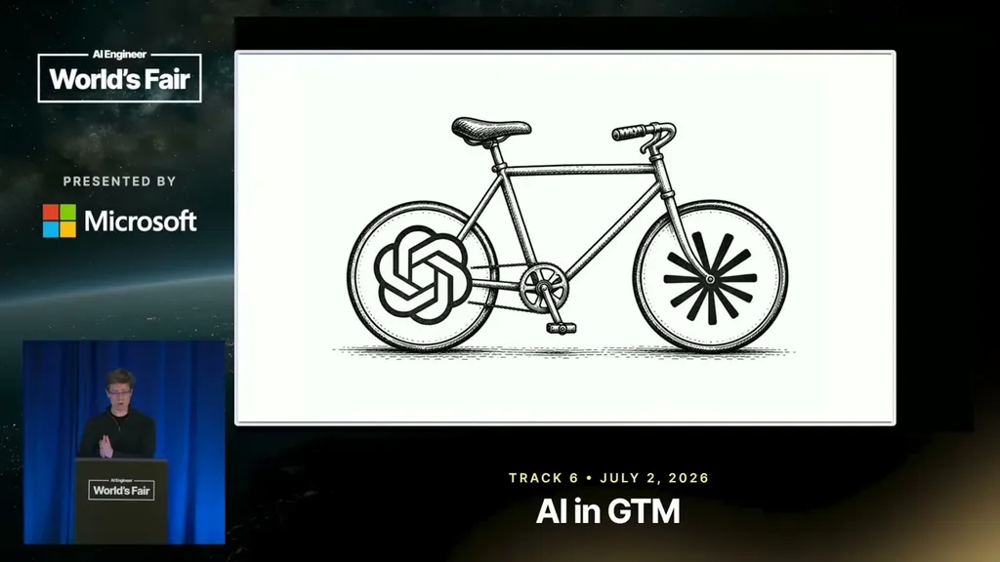
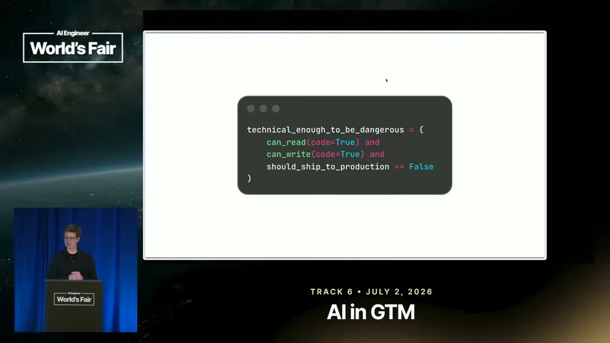
| Stance | Claim | t |
|---|---|---|
| warns | The hallucination problem has become a trust problem: agents confidently give wrong answers instead of flagging uncertainty. | 07:50 |
| recommends | The talk's main thesis is to manage AI agents the same way you'd manage a team of humans. | 08:22 |
| recommends | Prompt agents with commander's intent, telling them why you want something done, and they will perform the task better. | 08:52 |
| warns | Agents trained on human material default to micromanaging themselves and need to be redirected toward the underlying why. | 08:52 |
| recommends | Define structure with anchor assets first, then turn Claude loose, rather than YOLO-prompting from the start. | 11:30 |
| asserts | The Radiant Librarian gives agents just-in-time memory of company-specific facts, such as the company's actual fiscal year, before they answer a query. | 12:32 |
| asserts | A consensus judge treats independent analyst agents' evidence-cited opinions as input, not fact, weighing reasoning quality to produce the final attribution result. | 14:37 |
| warns | AI products crowbarred into cheap subscription plans, like Slackbot's new MCP client, shouldn't be used for anything important because the margin doesn't support an intelligent reasoning model. | 15:39 |
| recommends | Use at least a tier-two agent setup for important work: a powerful model with sub-agents, plan mode, and full MCP support. | 16:10 |
Machine-readable copy embedded in this page (script#ontology) and in the corpus ontology.